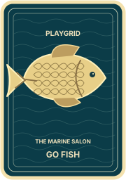

Nova6 cards · 2 books

Trouble4 cards · 0 books
THE MARINE SALONA LITTLE LUCK. A GOOD MEMORY.
The pond · 25 cards
YOUR BOOKS
4Complete
Next catch
1 · Choose a rank
2 · Ask a player
YOUR HAND · 5 CARDS1 book collected
 PLAYGRIDGo Fish
PLAYGRIDGo Fish